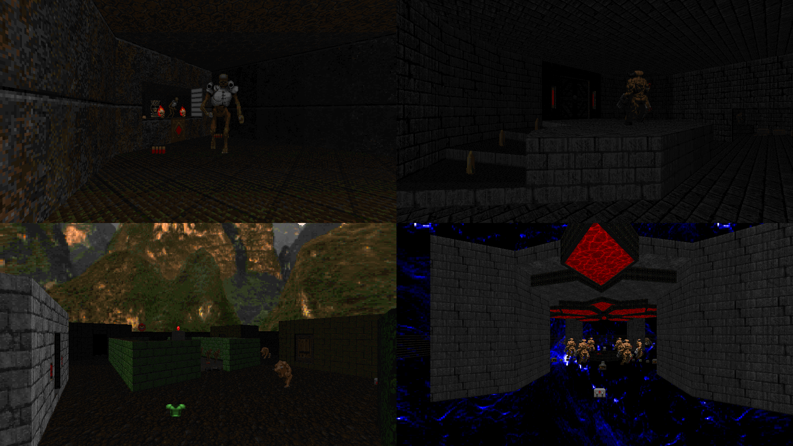

DOWNLOAD LINKS



| Year | 2021 |
| IWAD | doom2.wad |
| Source port | Limit-removing |
| Game mode(s) | Single-player |
| Map(s) | MAP01-21 |
Charcoal is a limit-removing megawad that I made during 2021's NaNoWADMo event. Consisting of 21 maps, the set is
divided into 4 "chapters", each with their own theme, and follows a loose narrative about entering a weird-looking dimension and
destroying a machine that towers over its expanse.
Each map for Charcoal was made as a speedmap in 75 minutes or less, so the overall experience is pretty breezy as far as its lifespan
is concerned, being beatable in about 30 minutes. The gameplay starts out fairly relaxed but gets more intense towards the end, with
the last few maps being almost slaughter-like and providing some gameplay concepts that I hope are positively unorthodox.